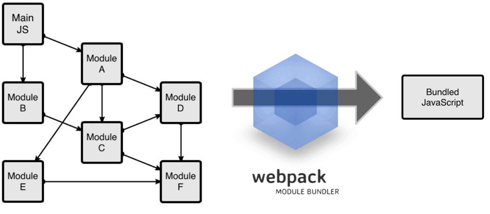
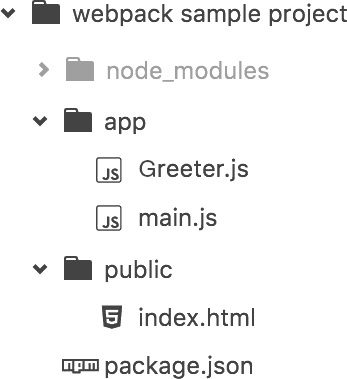

将虚拟机的 CPU 内核设置为两个以上
关闭 selinux 和防火墙
1 | # 关闭防火墙 |
关闭 swap
1 | # swapoff -a |
分别设置所有节点主机名
1 | hostnamectl --static set-hostname k8s-master |
所有节点 主机名/IP 加入 hosts 解析
1 | cat <<EOF >>/etc/hosts |
重新启动使 hostname 生效
1 | reboot |
1 | # 关闭防火墙 |
1 | # swapoff -a |
1 | hostnamectl --static set-hostname k8s-master |
1 | cat <<EOF >>/etc/hosts |
1 | reboot |
step 1：安装一些必要的系统工具
1 | yum install -y yum-utils device-mapper-persistent-data lvm2 |
Step 2：添加 docker 镜像源
1 | yum-config-manager --add-repo http://mirrors.aliyun.com/docker-ce/linux/centos/docker-ce.repo |
Step 3: 安装 Docker-CE
1 | yum -y install docker-ce |
Step 4: 开启 Docker 服务
1 | service docker start |
1 | yum install epel-release -y |
1 | scp ~/Downloads/harbor-offline-installer-v1.7.5.tgz root@192.16.1.101:/root/ |
登录虚拟机并执行解压配置
1 | tar xvf harbor-offline-installer-v1.7.5.tgz |
同时添加/etc/hosts域名映射
1 | cat <<EOF >>/etc/hosts |
1 | vi /etc/grub2.cfg |
/etc/sysconfig/network-scripts/ifcfg-ens33将ONBOOT更改为yes在宿主机上通过ssh连接到虚拟机
1 | ssh root@192.168.1.111 |
远程登录之后，添加新的网卡eth0：
1 | vi /etc/sysconfig/network-scripts/ifcfg-eth0 |
添加以下内容，注意修改 HWADDR 及 IPADDR 地址
其中 HWADDR 参考下图获取：
1 | DEVICE=eth0 |
NAT模式，重新启动机器以上便完成了 NAT 模式的虚拟机联网设置。
1 | # 生成 |
成功后，既可以通过ssh root@192.16.1.100登录虚拟机
这种模式下，虚拟机和物理机连的是同一个网络，虚拟机和物理机是并列关系，地位是相当的。比如，你家有路由器，那么你的电脑和你的手机同时连接这个路由器提供的 Wi-Fi，那么它们的关系就是这种模式。
这种模式下，物理机会充当一个“路由器”的角色，虚拟机要想上网，必须经过物理机，那物理机如果不能上网，虚拟机也就不能上网了。之所以说这种模式兼容性最好，是因为物理机的网络环境变化时，虚拟机的网络并不会有影响，比如，上班时你把物理机连接在公司的网络环境中，下班后又把物理机连接在你家的路由器上。你公司的网段有可能和你家的网段是不同的。桥接模式下，虚拟机和物理机一样，都要自动获取 IP 才可以上网，而做实验的时候，是需要把虚拟机设置为静态 IP 的，这样就导致虚拟机网络不稳定。而设置为 NAT 模式，虚拟机的网络并不需要依赖你公司的网络环境或者你家的网络环境。
这种模式下，相当于拿一根网线直连了物理机和虚拟机。
安装 VMWare Fusion 成功后，Mac OS 会新增两张网卡 vmnet1 以及 vmnet8，其中 vmnet1 是 Host-only 模式，vmnet8 是 NAT 模式，这里选择 vmnet8 使用 NAT 进行网络设置。
安装完成之后，ping 宿主机IP，返回network is unreachable，操作步骤如下：
1 | 将ONBOOT=no改成ONBOOT=yes |
1 | # 重新启动网络服务 |
ifconfig要查看 MAC 地址，需要用到ifconfig，需要首先安装。1 | yum search ifconfig |
由于直接操作虚拟机，不支持粘贴拷贝，所以可以通过 SecureCRT 远程连接，方便操作。
打开 SecureCRT，添加Quick Connection，选择ssh2、密码模式，输入机器的 IP 地址，登录名，点击链接，输入密码即可。
从初级开发者到资深架构师，看这些书就够了


（Toc generated by simple-php-github-toc ）
《java 队列——queue 详细分析》
_ 非阻塞队列：ConcurrentLinkedQueue(无界线程安全)，采用 CAS 机制（compareAndSwapObject 原子操作）。
_ 阻塞队列：ArrayBlockingQueue(有界)、LinkedBlockingQueue（无界）、DelayQueue、PriorityBlockingQueue，采用锁机制；使用 ReentrantLock 锁。
每个节点最多有两个叶子节点。
左右两个子树的高度差的绝对值不超过 1，并且左右两个子树都是一棵平衡二叉树。
二叉查找树（Binary Search Tree），也称有序二叉树（ordered binary tree）,排序二叉树（sorted binary tree）。
MySQL 是基于 B+树聚集索引组织表
LSM（Log-Structured Merge-Trees）和 B+ 树相比，是牺牲了部分读的性能来换取写的性能(通过批量写入)，实现读写之间的。
Hbase、LevelDB、Tair（Long DB）、nessDB 采用 LSM 树的结构。LSM 可以快速建立索引。
经常用于大规模数据的排重检查。
todo
按照个位、十位、百位、…依次来排。
《二分查找(java 实现)》
_ 要求待查找的序列有序。
_ 时间复杂度 O(logN)。
《java 实现二分查找-两种方式》 * while + 递归。
常用于大数据的排重，比如 email，url 等。
核心原理：将每条数据通过计算产生一个指纹（一个字节或多个字节，但一定比原始数据要少很多），其中每一位都是通过随机计算获得，在将指纹映射到一个大的按位存储的空间中。注意：会有一定的错误率。
优点：空间和时间效率都很高。
缺点：随着存入的元素数量增加，误算率随之增加。
KMP：Knuth-Morris-Pratt 算法（简称 KMP）
核心原理是利用一个“部分匹配表”，跳过已经匹配过的元素。
《带你搞懂朴素贝叶斯分类算法》 * P(B|A)=P(A|B)P(B)/P(A)
未提交读：一个事务可以读取另一个未提交的数据，容易出现脏读的情况。
读提交：一个事务等另外一个事务提交之后才可以读取数据，但会出现不可重复读的情况（多次读取的数据不一致），读取过程中出现 UPDATE 操作，会多。（大多数数据库默认级别是 RC，比如 SQL Server，Oracle），读取的时候不可以修改。
可重复读： 同一个事务里确保每次读取的时候，获得的是同样的数据，但不保障原始数据被其他事务更新（幻读），Mysql InnoDB 就是这个级别。
序列化：所有事物串行处理（牺牲了效率）
《MySQL 的 InnoDB 的幻读问题 》
_ 幻读的例子非常清楚。
_ 通过 SELECT … FOR UPDATE 解决。
《一篇文章带你读懂 MySQL 和 InnoDB》 * 图解脏读、不可重复读、幻读问题。
《【mysql】关于 innodb 中 MVCC 的一些理解》
_ innodb 中 MVCC 用在 Repeatable-Read 隔离级别。
_ MVCC 会产生幻读问题（更新时异常。）
* 通过隐藏版本列来实现 MVCC 控制，一列记录创建时间、一列记录删除时间，这里的时间
* 每次只操作比当前版本小（或等于）的 行。《Java 中的锁分类》 * 主要包括 synchronized、ReentrantLock、和 ReadWriteLock。
《Java 中信号量 Semaphore》
_ 有数量控制
_ 申请用 acquire，申请不要则阻塞；释放用 release。
《java 开发中的 Mutex vs Semaphore》 * 简单的说 就是 Mutex 是排它的，只有一个可以获取到资源， Semaphore 也具有排它性，但可以定义多个可以获取的资源的对象。
公平锁的作用就是严格按照线程启动的顺序来执行的，不允许其他线程插队执行的；而非公平锁是允许插队的。
悲观锁如果使用不当（锁的条数过多），会引起服务大面积等待。推荐优先使用乐观锁+重试。
《【MySQL】悲观锁&乐观锁》
_ 乐观锁的方式：版本号+重试方式
_ 悲观锁：通过 select … for update 进行行锁(不可读、不可写，share 锁可读不可写)。
《Mysql 查询语句使用 select.. for update 导致的数据库死锁分析》
_ mysql 的 innodb 存储引擎实务锁虽然是锁行，但它内部是锁索引的。
_ 锁相同数据的不同索引条件可能会引起死锁。
由于高并发，在 CAS 下，更新后可能此 A 非彼 A。通过版本号可以解决，类似于上文 Mysql 中提到的的乐观锁。
可以对 CopyOnWrite 容器进行并发的读，而不需要加锁。CopyOnWrite 并发容器用于读多写少的并发场景。比如白名单，黑名单，商品类目的访问和更新场景，不适合需要数据强一致性的场景。
《可重入锁和不可重入锁》
_ 通过简单代码举例说明可重入锁和不可重入锁。
_ 可重入锁指同一个线程可以再次获得之前已经获得的锁。
_ 可重入锁可以用户避免死锁。
_ Java 中的可重入锁：synchronized 和 java.util.concurrent.locks.ReentrantLock
《ReenTrantLock 可重入锁（和 synchronized 的区别）总结》
_ synchronized 使用方便，编译器来加锁，是非公平锁。
_ ReenTrantLock 使用灵活，锁的公平性可以定制。 * 相同加锁场景下，推荐使用 synchronized。
互斥锁：同时只能有一个线程获得锁。比如，ReentrantLock 是互斥锁，ReadWriteLock 中的写锁是互斥锁。
共享锁：可以有多个线程同时或的锁。比如，Semaphore、CountDownLatch 是共享锁，ReadWriteLock 中的读锁是共享锁。
典型的 CPU 有三级缓存，距离核心越近，速度越快，空间越小。L1 一般 32k，L2 一般 256k，L3 一般 12M。内存速度需要 200 个 CPU 周期，CPU 缓存需要 1 个 CPU 周期。
todo
《细数 JDK 里的设计模式》
_ 结构型模式：
_ 适配器：用来把一个接口转化成另一个接口，如 java.util.Arrays#asList()。
_ 桥接模式：这个模式将抽象和抽象操作的实现进行了解耦，这样使得抽象和实现可以独立地变化，如 JDBC；
_ 组合模式：使得客户端看来单个对象和对象的组合是同等的。换句话说，某个类型的方法同时也接受自身类型作为参数，如 Map.putAll，List.addAll、Set.addAll。
_ 装饰者模式：动态的给一个对象附加额外的功能，这也是子类的一种替代方式，如 java.util.Collections#checkedList|Map|Set|SortedSet|SortedMap。
_ 享元模式：使用缓存来加速大量小对象的访问时间，如 valueOf(int)。
_ 代理模式：代理模式是用一个简单的对象来代替一个复杂的或者创建耗时的对象，如 java.lang.reflect.Proxy
_ 创建模式:
_ 抽象工厂模式：抽象工厂模式提供了一个协议来生成一系列的相关或者独立的对象，而不用指定具体对象的类型，如 java.util.Calendar#getInstance()。
_ 建造模式(Builder)：定义了一个新的类来构建另一个类的实例，以简化复杂对象的创建，如：java.lang.StringBuilder#append()。 * 工厂方法：就是 一个返* 回具体对象的方法，而不是多个，如 java.lang.Object#toString()、java.lang.Class#newInstance()。
_ 原型模式：使得类的实例能够生成自身的拷贝、如：java.lang.Object#clone()。
_ 单例模式：全局只有一个实例，如 java.lang.Runtime#getRuntime()。
_ 行为模式：
_ 责任链模式：通过把请求从一个对象传递到链条中下一个对象的方式，直到请求被处理完毕，以实现对象间的解耦。如 javax.servlet.Filter#doFilter()。
_ 命令模式：将操作封装到对象内，以便存储，传递和返回，如：java.lang.Runnable。
_ 解释器模式：定义了一个语言的语法，然后解析相应语法的语句，如，java.text.Format，java.text.Normalizer。
_ 迭代器模式：提供一个一致的方法来顺序访问集合中的对象，如 java.util.Iterator。
_ 中介者模式：通过使用一个中间对象来进行消息分发以及减少类之间的直接依赖，java.lang.reflect.Method#invoke()。
_ 空对象模式：如 java.util.Collections#emptyList()。
_ 观察者模式：它使得一个对象可以灵活的将消息发送给感兴趣的对象，如 java.util.EventListener。 * 模板方法模式：让子类可以重写方法的一部分，而不是整个重写，如 java.util.Collections#sort()。
todo
《微服务架构的理论基础 - 康威定律》
_ 定律一：组织沟通方式会通过系统设计表达出来，就是说架构的布局和组织结构会有相似。
_ 定律二：时间再多一件事情也不可能做的完美，但总有时间做完一件事情。一口气吃不成胖子，先搞定能搞定的。
_ 定律三：线型系统和线型组织架构间有潜在的异质同态特性。种瓜得瓜，做独立自治的子系统减少沟通成本。
_ 定律四：大的系统组织总是比小系统更倾向于分解。合久必分，分而治之。
《腾讯业务系统监控的修炼之路》
_ 监控的方式：主动、被动、旁路(比如舆情监控)
_ 监控类型： 基础监控、服务端监控、客户端监控、
监控、用户端监控
_ 监控的目标：全、块、准
_ 核心指标：请求量、成功率、耗时
《开源还是商用？十大云运维监控工具横评》 * Zabbix、Nagios、Ganglia、Zenoss、Open-falcon、监控宝、 360 网站服务监控、阿里云监控、百度云观测、小蜜蜂网站监测等。
命令行监控工具
《常用命令行监控工具》 * top、sar、tsar、nload
APM — Application Performance Management
主要开源软件，按字母排序
《开源 APM 技术选型与实战》 * 主要基于 Google 的 Dapper（大规模分布式系统的跟踪系统） 思想。
《流量统计的基础：埋点》 * 常用指标：访问与访客、停留时长、跳出率、退出率、转化率、参与度
《APP 埋点常用的统计工具、埋点目标和埋点内容》 * 第三方统计：友盟、百度移动、魔方、App Annie、talking data、神策数据等。
《美团点评前端无痕埋点实践》 * 所谓无痕、即通过可视化工具配置采集节点，在前端自动解析配置并上报埋点数据，而非硬编码。
开发、测试、生成环境分离。
《Ngnix 的基本学习-多进程和 Apache 的比较》
_ Nginx 通过异步非阻塞的事件处理机制实现高并发。Apache 每个请求独占一个线程，非常消耗系统资源。
_ 事件驱动适合于 IO 密集型服务(Nginx)，多进程或线程适合于 CPU 密集型服务(Apache)，所以 Nginx 适合做反向代理，而非 web 服务器使用。
《nginx 与 Apache 的对比以及优缺点》 * nginx 只适合静态和反向代理，不适合处理动态请求。
《JBoss vs. Tomcat: Choosing A Java Application Server》
_ Tomcat 是轻量级的 Serverlet 容器，没有实现全部 JEE 特性（比如持久化和事务处理），但可以通过其他组件代替，比如 Spring。
_ Jboss 实现全部了 JEE 特性，软件开源免费、文档收费。
《Tomcat 调优方案》 * 启动 NIO 模式（或者 APR）；调整线程池；禁用 AJP 连接器（Nginx+tomcat 的架构，不需要 AJP）；
《AJP 与 HTTP 比较和分析》
_ AJP 协议（8009 端口）用于降低和前端 Server（如 Apache，而且需要支持 AJP 协议）的连接数(前端)，通过长连接提高性能。
_ 并发高时，AJP 协议优于 HTTP 协议。
《EhCache 本地缓存》
_ 堆内、堆外、磁盘三级缓存。
_ 可按照缓存空间容量进行设置。 * 按照时间、次数等过期策略。
《Guava Cache》 * 简单轻量、无堆外、磁盘缓存。
《浏览器端缓存》 * 主要是利用 Cache-Control 参数。
《深入理解 Memcached 原理》
_ 采用多路复用技术提高并发性。
_ slab 分配算法： memcached 给 Slab 分配内存空间，默认是 1MB。分配给 Slab 之后 把 slab 的切分成大小相同的 chunk，Chunk 是用于缓存记录的内存空间，Chunk 的大小默认按照 1.25 倍的速度递增。好处是不会频繁申请内存，提高 IO 效率，坏处是会有一定的内存浪费。
《memcache 中 add 、 set 、replace 的区别》 * 区别在于当 key 存在还是不存在时，返回值是 true 和 false 的。
《redis 底层原理》
_ 使用 ziplist 存储链表，ziplist 是一种压缩链表，它的好处是更能节省内存空间，因为它所存储的内容都是在连续的内存区域当中的。
_ 使用 skiplist(跳跃表)来存储有序集合对象、查找上先从高 Level 查起、时间复杂度和红黑树相当，实现容易，无锁、并发性好。
《Redis 持久化方式》
_ RDB 方式：定期备份快照，常用于灾难恢复。优点：通过 fork 出的进程进行备份，不影响主进程、RDB 在恢复大数据集时的速度比 AOF 的恢复速度要快。缺点：会丢数据。
_ AOF 方式：保存操作日志方式。优点：恢复时数据丢失少，缺点：文件大，回复慢。 * 也可以两者结合使用。
几种存储引擎:
《消息队列-推/拉模式学习 & ActiveMQ 及 JMS 学习》
_ RabbitMQ 消费者默认是推模式（也支持拉模式）。
_ Kafka 默认是拉模式。
_ Push 方式：优点是可以尽可能快地将消息发送给消费者，缺点是如果消费者处理能力跟不上，消费者的缓冲区可能会溢出。
_ Pull 方式：优点是消费端可以按处理能力进行拉去，缺点是会增加消息延迟。
消息总线相当于在消息队列之上做了一层封装，统一入口，统一管控、简化接入成本。
支持事务，推拉模式都是支持、适合需要可靠性消息传输的场景。
Java 实现，推拉模式都是支持，吞吐量逊于 Kafka。可以保证消息顺序。
纯 Java 实现，兼容 JMS，可以内嵌于 Java 应用中。
高吞吐量、采用拉模式。适合高 IO 场景，比如日志同步。
生产者、消费者模式完全是客户端行为，list 和 拉模式实现，阻塞等待采用 blpop 指令。
todo
《Linux cron 运行原理》 * fork 进程 + sleep 轮询
《quartz 原理揭秘和源码解读》 * 定时调度在 QuartzSchedulerThread 代码中，while()无限循环，每次循环取出时间将到的 trigger，触发对应的 job，直到调度器线程被关闭。
《这些优秀的国产分布式任务调度系统，你用过几个？》 * opencron、LTS、XXL-JOB、Elastic-Job、Uncode-Schedule、Antares
《Quartz 任务调度的基本实现原理》 * Quartz 集群中，独立的 Quartz 节点并不与另一其的节点或是管理节点通信，而是通过相同的数据库表来感知到另一 Quartz 应用的
《从零开始实现 RPC 框架 - RPC 原理及实现》 * 核心角色：Server: 暴露服务的服务提供方、Client: 调用远程服务的服务消费方、Registry: 服务注册与发现的注册中心。
SPI
todo
服务端可以认证加密，在外网环境下，可以保证数据安全。
Apollo - 携程开源的配置中心应用
_ Spring Boot 和 Spring Cloud
_ 支持推、拉模式更新配置 * 支持多种语言
servlet 3.0 异步特性可用于配置中心的客户端
主要职责：请求转发、安全认证、协议转换、容灾。
《https 原理通俗了解》
_ 使用非对称加密协商加密算法
_ 使用对称加密方式传输数据 * 使用第三方机构签发的证书，来加密公钥，用于公钥的安全传输、防止被中间人串改。
《web 优化必须了解的原理之 I/o 的五种模型和 web 的三种工作模式》
_ 五种 I/O 模型：阻塞 I/O，非阻塞 I/O，I/O 复用、事件(信号)驱动 I/O、异步 I/O，前四种 I/O 属于同步操作，I/O 的第一阶段不同、第二阶段相同，最后的一种则属于异步操作。
_ 三种 Web Server 工作方式：Prefork(多进程)、Worker 方式(线程方式)、Event 方式。
《select、poll、epoll 之间的区别总结》
_ select，poll，epoll 本质上都是同步 I/O，因为他们都需要在读写事件就绪后自己负责进行读写，也就是说这个读写过程是阻塞的。
_ select 有打开文件描述符数量限制，默认 1024（2048 for x64），100 万并发，就要用 1000 个进程、切换开销大；poll 采用链表结构，没有数量限制。
_ select，poll “醒着”的时候要遍历整个 fd 集合，而 epoll 在“醒着”的时候只要判断一下就绪链表是否为空就行了，通过回调机制节省大量 CPU 时间；select，poll 每次调用都要把 fd 集合从用户态往内核态拷贝一次，而 epoll 只要一次拷贝。
_ poll 会随着并发增加，性能逐渐下降，epoll 采用红黑树结构，性能稳定，不会随着连接数增加而降低。
《select，poll，epoll 比较 》 * 在连接数少并且连接都十分活跃的情况下，select 和 poll 的性能可能比 epoll 好，毕竟 epoll 的通知机制需要很多函数回调。
《深入理解 Java NIO》 * NIO 是一种同步非阻塞的 IO 模型。同步是指线程不断轮询 IO 事件是否就绪，非阻塞是指线程在等待 IO 的时候，可以同时做其他任务
《Protobuf 协议的 Java 应用例子》
Goolge 出品、占用空间和效率完胜其他序列化类库，如 Hessian；需要编写 .proto 文件。
《Protocol Buffers 序列化协议及应用》 * 关于协议的解释；缺点：可读性差;
《简单的使用 protobuf 和 protostuff》 * protostuff 的好处是不用写 .proto 文件，Java 对象直接就可以序列化。
《MySQL 存储引擎－－MyISAM 与 InnoDB 区别》 * 两种类型最主要的差别就是 Innodb 支持事务处理与外键和行级锁
《 MYSQL 分页 limit 速度太慢优化方法》 * 原则上就是缩小扫描范围。
MyISAM 是非聚集，InnoDB 是聚集
《Hbase 与传统数据库的区别》 * 空数据不存储，节省空间，且适用于并发。
《HBase Rowkey 设计》
_ rowkey 按照字典顺序排列，便于批量扫描。
_ 通过散列可以避免热点。
《15 天的性能优化工作，5 方面的调优经验》 * 代码层面、业务层面、数据库层面、服务器层面、前端优化。
例如：
《详解滑动验证码的实现原理》 * 滑动验证码是根据人在滑动滑块的响应时间，拖拽速度，时间，位置，轨迹，重试次数等来评估风险。
《常见非对称加密算法》
_ RSA、DSA、ECDSA(螺旋曲线加密算法)
_ 和 RSA 不同的是 DSA 仅能用于数字签名，不能进行数据加密解密，其安全性和 RSA 相当，但其性能要比 RSA 快。 * 256 位的 ECC 秘钥的安全性等同于 3072 位的 RSA 秘钥。
[《区块链的加密技术》](http://baijiahao.baidu.com/s?id=1578348858092033763&wfr=spider&for=pc)todo
todo
在内外环境中通过跳板机登录到线上主机。
2FA - Two-factor authentication，用于加强登录验证
常用做法是 登录密码 + 手机验证码（或者令牌 Key，类似于与网银的 USB key）
MyBatis：
《mybatis 缓存机制详解》
_ 一级缓存是 SqlSession 级别的缓存，缓存的数据只在 SqlSession 内有效
_ 二级缓存是 mapper 级别的缓存，同一个 namespace 公用这一个缓存，所以对 SqlSession 是共享的；使用 LRU 机制清理缓存，通过 cacheEnabled 参数开启。
todo
Spring
Spring Boot
Spring Cloud
《架构师不可不知的十大可扩展架构》 * 总结下来，通用的套路就是分布、缓存及异步处理。
《可扩展性设计之数据切分》
_ 水平切分+垂直切分
_ 利用中间件进行分片如，MySQL Proxy。 * 利用分片策略进行切分，如按照 ID 取模。
《说说如何实现可扩展性的大型网站架构》 * 分布式服务+消息队列。
《转！！负载均衡器技术 Nginx 和 F5 的优缺点对比》 * 主要是和 F5 对比。
《几种负载均衡算法》
轮寻、权重、负载、最少连接、QoS
《DNS 负载均衡》 * 配置简单，更新速度慢。
《Nginx 负载均衡》 * 简单轻量、学习成本低；主要适用于 web 应用。
《借助 LVS+Keepalived 实现负载均衡 》 * 配置比较负载、只支持到 4 层，性能较高。
《HAProxy 用法详解 全网最详细中文文档》 * 支持到七层（比如 HTTP）、功能比较全面，性能也不错。
《Haproxy+Keepalived+MySQL 实现读均衡负载》 * 主要是用户读请求的负载均衡。
limit_req 等模块限制并发连接数。《防雪崩利器：熔断器 Hystrix 的原理与使用》
_ 雪崩效应原因：硬件故障、硬件故障、程序 Bug、重试加大流量、用户大量请求。
_ 雪崩的对策：限流、改进缓存模式(缓存预加载、同步调用改异步)、自动扩容、降级。
_ Hystrix 设计原则：
_ 资源隔离：Hystrix 通过将每个依赖服务分配独立的线程池进行资源隔离, 从而避免服务雪崩。
_ 熔断开关：服务的健康状况 = 请求失败数 / 请求总数，通过阈值设定和滑动窗口控制开关。
_ 命令模式：通过继承 HystrixCommand 来包装服务调用逻辑。
《缓存击穿、失效以及热点 key 问题》
_ 主要策略：失效瞬间：单机使用锁；使用分布式锁；不过期；
_ 热点数据：热点数据单独存储；使用本地缓存；分成多个子 key；
《“异地多活”多机房部署经验谈》 * 通过自研中间件进行数据同步。
《异地多活（异地双活）实践经验》
_ 注意延迟问题，多次跨机房调用会将延时放大数倍。
_ 建房间专线很大概率会出现问题，做好运维和程序层面的容错。
_ 不能依赖于程序端数据双写，要有自动同步方案。
_ 数据永不在高延迟和较差网络质量下，考虑同步质量问题。
_ 核心业务和次要业务分而治之，甚至只考虑核心业务。
_ 异地多活监控部署、测试也要跟上。
_ 业务允许的情况下考虑用户分区，尤其是游戏、邮箱业务。
_ 控制跨机房消息体大小，越小越好。 * 考虑使用 docker 容器虚拟化技术，提高动态调度能力。
平滑重启应用思路 1.端流量（如 vip 层）、2. flush 数据(如果有)、3, 重启应用
《JVM 安全退出（如何优雅的关闭 java 服务）》
推荐推出方式：System.exit，Kill SIGTERM；不推荐 kill-9；用 Runtime.addShutdownHook 注册钩子。
《常见 Java 应用如何优雅关闭》
Java、Spring、Dubbo 优雅关闭方式。
《DRBD+Heartbeat+Mysql 高可用读写分离架构》 * DRDB 进行磁盘复制，避免单点问题。
《分库分表需要考虑的问题及方案》
_ 中间件： 轻量级：sharding-jdbc、TSharding；重量级：Atlas、MyCAT、Vitess 等。
_ 问题：事务、Join、迁移、扩容、ID、分页等。
_ 事务补偿：对数据进行对帐检查;基于日志进行比对;定期同标准数据来源进行同步等。
_ 分库策略：数值范围；取模；日期等。 * 分库数量：通常 MySQL 单库 5 千万条、Oracle 单库一亿条需要分库。
《MySql 分表和表分区详解》
_ 分区：是 MySQL 内部机制，对客户端透明，数据存储在不同文件中，表面上看是同一个表。
_ 分表：物理上创建不同的表、客户端需要管理分表路由。
《SpringCloud 服务注册中心比较:Consul vs Zookeeper vs Etcd vs Eureka》
《基于 Zookeeper 的服务注册与发现》 * 优点：API 简单、Pinterest，Airbnb 在用、多语言、通过 watcher 机制来实现配置 PUSH，能快速响应配置变化。
《分布式锁的几种实现方式》
_ 基于数据库的分布式锁：优点：操作简单、容易理解。缺点：存在单点问题、数据库性能够开销较大、不可重入；
_ 基于缓存的分布式锁：优点：非阻塞、性能好。缺点：操作不好容易造成锁无法释放的情况。 * Zookeeper 分布式锁：通过有序临时节点实现锁机制，自己对应的节点需要最小，则被认为是获得了锁。优点：集群可以透明解决单点问题，避免锁不被释放问题，同时锁可以重入。缺点：性能不如缓存方式，吞吐量会随着 zk 集群规模变大而下降。
《基于 Zookeeper 的分布式锁》 * 清楚的原理描述 + Java 代码示例。
《jedisLock—redis 分布式锁实现》 * 基于 setnx(set if ont exists)，有则返回 false，否则返回 true。并支持过期时间。
《Memcached 和 Redis 分布式锁方案》 * 利用 memcached 的 add（有别于 set）操作，当 key 存在时，返回 false。
《高并发分布式系统中生成全局唯一 Id 汇总》
_ Twitter 方案（Snowflake 算法）：41 位时间戳+10 位机器标识（比如 IP，服务器名称等）+12 位序列号(本地计数器)
_ Flicker 方案：MySQL 自增 ID + “REPLACE INTO XXX:SELECT LAST*INSERT_ID();”
《TDDL 在分布式下的 SEQUENCE 原理》
_ 在数据库中创建 sequence 表，用于记录，当前已被占用的 id 最大值。
_ 每台客户端主机取一个 id 区间（比如 1000~2000）缓存在本地，并更新 sequence 表中的 id 最大值记录。 * 客户端主机之间取不同的 id 区间，用完再取，使用乐观锁机制控制并发。
《领域驱动设计(DDD)实现之路》 * 聚合：比如一辆汽车（Car）包含了引擎（Engine）、车轮（Wheel）和油箱（Tank）等组件，缺一不可。
CQRS — Command Query Responsibility Seperation
《领域驱动设计系列 (六)：CQRS》 * 核心思想：读写分离（查询和更新在不同的方法中），不同的流程只是不同的设计方式，CQ 代码分离，分布式环境中会有明显体现（有冗余数据的情况下），目的是为了高性能。
《DDD CQRS 架构和传统架构的优缺点比较》 * 最终一致的设计理念；依赖于高可用消息中间件。
《CQRS 架构简介》 * 一个实现 CQRS 的抽象案例。
《深度长文：我对 CQRS/EventSourcing 架构的思考》 * CQRS 模式分析 + 12306 抢票案例
todo
todo
todo
todo
无需过多关系服务器的服务架构理念。
《什么是 Serverless 无服务器架构？》
_ Serverless 不代表出去服务器，而是去除对服务器运行状态的关心。
_ Serverless 代表一思维方式的转变，从“构建一套服务在一台服务器上，对对个事件进行响应转变为构建一个为服务器，来响应一个事件”。 * Serverless 不代表某个具体的框架。
《如何理解 Serverless？》 * 依赖于 Baas （(Mobile) Backend as a Service） 和 Faas （Functions as a service）
制度还是制度!
另外，每个公司需要根据自己的需求和目标制定自己的 check list
《为什么你做不好 Code Review？》 * 代码 review 做的好，在于制度建设。
SCRUM - 争球
todo
XP - eXtreme Programming
边写码，边 review。能够增强代码质量、减少 bug。
P——PLAN 策划，D——DO 实施，C——CHECK 检查，A——ACT 改进
todo
todo
todo
《最高人民法院、最高人民检察院关于办理侵犯公民个人信息刑事案件适用法律若干问题的解释》
- 1、对于行踪轨迹信息、通信内容、征信信息、财产信息，非法获取、出售或者提供 50 条以上即算“情节严重”；
- 2、对于住宿信息、通信记录、健康生理信息、交易信息等其他可能影响人身、财产安全的公民个人信息，标准则是 500 条以上；
- 3、对于其他公民个人信息，标准为 5000 条以上。
我国刑法第 253 条之一规定：
- 国家机关或者金融、电信、交通、教育、医疗等单位的工作人员，违反国家规定，将本单位在履行职责或者提供服务过程中获得的公民个人信息，出售或者非法提供给他人，情节严重的，处 3 年以下有期徒刑或者拘役，并处或者单处罚金。
- 窃取或者以其他方法非法获取上述信息，情节严重的，依照前款的规定处罚。
- 单位犯前两款罪的，对单位判处罚金，并对其直接负责的主管人员和其他直接责任人员，依照各该款的规定处罚。
最高人民法院、最高人民检察院关于执行《中华人民共和国刑法》确定罪名的补充规定（四）规定：触犯刑法第 253 条之一第 1 款之规定，构成“出售、非法提供公民个人信息罪”；触犯刑法第 253 条之一第 2 款之规定，构成“非法获取公民个人信息罪”
《架构师画像》
_ 业务理解和抽象能力
_ NB 的代码能力
_ 全面：1. 在面对业务问题上，架构师脑海里是否会浮现出多种技术方案；2. 在做系统设计时是否考虑到了足够多的方方面面；3. 在做系统设计时是否考虑到了足够多的方方面面；
_ 全局：是否考虑到了对上下游的系统的影响。 * 权衡：权衡投入产出比；优先级和节奏控制；
《关于架构优化和设计，架构师必须知道的事情》
_ 要去考虑的细节：模块化、轻耦合、无共享架构；减少各个组件之前的依赖、注意服务之间依赖所有造成的链式失败及影响等。
_ 基础设施、配置、测试、开发、运维综合考虑。 * 考虑人、团队、和组织的影响。
《架构师的必备素质和成长途径》
_ 素质：业务理解、技术广度、技术深度、丰富经验、沟通能力、动手能力、美学素养。
_ 成长路径：2 年积累知识、4 年积累技能和组内影响力、7 年积累部门内影响力、7 年以上积累跨部门影响力。
《架构设计师—你在哪层楼？》
_ 第一层的架构师看到的只是产品本身
_ 第二层的架构师不仅看到自己的产品，还看到了整体的方案 * 第三层的架构师看到的是商业价值
todo
todo
国内：
CSDN
老牌技术社区、不必解释。
ITeye * 偏 Java 方向
ChinaUnix * 偏 Linux 方向
伯乐在线 * 涵盖 IT 职场、Web 前端、后端、移动端、数据库等方面内容，偏技术端。
国外：
测试:
_ 领测国际
_ 测试窝 * TesterHome
Java:
_ ImportNew
_ 专注于 Java 技术分享
_ HowtodoInJava
_ 英文博客
大数据 * 中国大数据
其他专题网站：
_ InfoQ
_ 偏重于基础架构、运维方向
_ DockerInfo
_ 专注于 Docker 应用及咨询、教程的网站
_ Linux 公社
_ Linux 主题社区
更多架构方面书籍参考: awesome-java-books
《软件架构师的 12 项修炼：技术技能篇》详情
《架构之美》详情
《分布式服务架构》详情
《聊聊架构》 详情
《云原生应用架构实践》详情
《亿级流量网站架构核心技术》详情
《淘宝技术这十年》详情
《企业 IT 架构转型之道-中台战略思想与架构实战》 详情
《高可用架构（第 1 卷）》详情
todo
国内：
Runoob.com * HTML 、 CSS、XML、Java、Python、PHP、设计模式等入门手册。
Love2.io * 很多很多中文在线电子书，是一个全新的开源技术文档分享平台。
gitbook.cn * 付费电子书。
ApacheCN * AI、大数据方面系列中文文档。
国外：
活动发布平台:
1/3 业务对接，1/3 研发对接，1/3 架构设计。
大规模架构设计：k8s docker 、负载均衡。
积极面对，想办法解决问题：
k8s：
https://k.i4t.com/
master
node
pod
replication controller
service
label
Service 和 Pod 如何关联：标签选择器
为什么 Kubernetes 会设计出一个全新的 Pod 概念，并且有这样特殊的结构？
原因一：Pause 容器作为 Pod 根容器，以它的状态代表整个容器组的状态 原因二： Pod 里的多个业务容器共享 Pause 容器的 IP，共享 Pause 容器挂接的 Volume
Master，
Node–>pod–>container+pause
Hadoop=HDFS（文件系统，数据存储技术相关）+ Mapreduce（数据处理）,Hive,pig
HDSF Hadoop Distributed File System, Hadoop 分布式文件系统。
Hadoop 的框架最核心的设计就是：HDFS 和 MapReduce。HDFS 为海量的数据提供了存储，而 MapReduce 则为海量的数据提供了计算。
Hadoop 有两个核心模块，分布式存储模块 HDFS 和分布式计算模块 Mapreduce
spark 本身并没有提供分布式文件系统，因此 spark 的分析大多依赖于 Hadoop 的分布式文件系统 HDFS
Hadoop 的 Mapreduce 与 spark 都可以进行数据计算，而相比于 Mapreduce，spark 的速度更快并且提供的功能更加丰富
NIO 是一种同步非阻塞的 IO 模型。同步是指线程不断轮询 IO 事件是否就绪，非阻塞是指线程在等待 IO 的时候，可以同时做其他任务
IO 的方式通常分为几种，同步阻塞的 BIO、同步非阻塞的 NIO、异步非阻塞的 AIO。
BIO 与 NIO 一个比较重要的不同，是我们使用 BIO 的时候往往会引入多线程，每个连接一个单独的线程；而 NIO 则是使用单线程或者只使用少量的多线程，每个连接共用一个线程。
todo:
ES=elaticsearch 简写， Elasticsearch 是一个开源的高扩展的分布式全文检索引擎，它可以近乎实时的存储、检索数据；本身扩展性很好，可以扩展到上百台服务器，处理 PB 级别的数据。
EPEL 的全称叫 Extra Packages for Enterprise Linux 。EPEL 是由 Fedora 社区打造，为 RHEL 及衍生发行版如 CentOS、Scientific Linux 等提供高质量软件包的项目。装上了 EPEL 之后，就相当于添加了一个第三方源。
01、Java av47103781
02、Spring av47103781
03、Spring Mvc av47176832
04、MyBatis av47228830
05、Hibernate av47382482
06、Spring Boot av47230137
07、Spring Cloud av47228830
08、Dubbo av47009143
09、MySQL av47702905
10、Redis av47423174
11、MongoDB av47425352
12、Elasticsearch av48279989
13、Zookeeper av47773419
14、Kafka av47773990
15、Linux av47701443
16、Docker av47715282
17、Maven av47382482
18、Git av47701443
19、Jenkins av47714706
20、IDEA av47382482
21、Shiro av47382482
22、React av48033695
23、Vue av48034319
24、电商项目实战 av48308453
25、RBAC 权限系统 av48305719
26、数据结构与算法 av48505556
27、Oracle av48502473
28、ActiveMQ av48562474
29、TCP/IP av48562426
30、HTTP av48561455
31、Netty av48570202
32、Gradle av48581119
33、HBase av48581792
34、Kubernetes av48582456
35、Hive av48609427
36、Hadoop av48621769
37、Spark av48668079
38、Python av48324668
39、Python 项目实战 av48921588
40、人工智能 av49122347
41、HTML + CSS av49126649
42、Javascript av48927313
43、微信小程序 av48324778
44、React 项目实战 av48495066
45、Vue 项目实战 av48333477
1 | spring: |
${MYSQL-USER:root}就是普通的spel表达式啊，${}代表在你配置的环境变量取值，后面的 : 代表是默认值，就是没有取到这个值就用默认的，MYSQL-USER 可能是系统的也可能是 docker 里面的。
1 | eureka: |
1 | /bin/sh -c "touch /tmp/healthy; sleep 30; rm -rf /tmp/healthy; sleep 600" |
tps：Transactions Per Second，一般在事务系统之中，在 mysql 可以用 tps
qps：Queries Per Second，一般就是访问次数
ops：Operates Per Second，一般是操作次数，与 qps 区别不大。
动态扩容:HPA
微服务 6 大要素：
1、服务注册与发现；2、进程间通信；3、负载均衡；4、分布式配置中心；5、熔断器；6、网关路由。
Kubernetes 中的大部分概念如 Node、Pod、Replication Controller、Server、Deploymeng、Job、DaemonSet 等都可以看作一种资源对象，几乎所有的资源对象都可以通过 Kubernetes 提供的 kubectl 工具执行增、删、改、查等操作，并将其保存在 etcd 中持久化存储。从这个角度来看，Kubernets 其实是一个高度自动化的资源控制系统，它通过跟踪对比 etcd 存储里保存的资源期望状态与当前环境中的实际资源状态的差异来实现自动控制和自动纠错的高级功能。
Master 节点上运行着以下一组关键进程：
Kube-apiserver：提供了 HTTP Rest 接口的关键服务进程，是 Kubernetes 里所有资源的增、删、改、查等操作的唯一入口，也是集群控制入口进程。
Kube-controller-manager：是 Kubernetes 里所有资源对象的自动化控制中心，可以理解为资源对象的管家。
Kube-scheduler：负责资源调度的进程，相当于公交公司的调度室。
其实 Master 节点上往往还启动了一个 etcd server 进程，因为 Kubernetes 里的所有资源对象的数据全部是保存在 etcd 中的。
每个 Node 节点都运行着以下一组关键进程：
Kubelet：负责 Pod 对应的容器的创建、启停等任务，同时与 Master 节点密切协作，实现集群管理的基本功能。
Kube-proxy：实现 Kubernetes Service 的通信与负载均衡机制的重要组件。
1 | # 安装net-tools工具 |
ctrl+l
如果不存在，安装如下：
1 | yum install -y java-1.8.0-openjdk-devel.x86_64 |
Java 语言中的类、方法、变量、参数和包等都可以被标注。和 Javadoc 不同，Java 标注可以通过反射获取注解内容。在编译器生成类文件时，注解可以被嵌入到字节码中。Java 虚拟机可以保留注解内容，在运行时可以获取到注解内容。
转自https://segmentfault.com/a/119000000617877047808
代码：https://github.com/Val-Zhang/webpack-demo.git https://github.com/helloint/helloint.github.io.git
2018 年 8 月 25 日更新，目前 webpack 已经更新值 4.17.1 ，本文所用到的各种库或多或少有些过时，跟着代码操作下来可能会遇到各种问题，不过 webpack 的主体思想没变，所以还是希望本文对新学 webpack 的你，有所帮助。此外用基于 webpack 4.17.1 写了一个简单的 demo，如果遇到啥问题，可以参考，之后应该会逐步来完善这个 demo，如果有啥通用的想实现的功能，也可以在里面提 issue。
2017 年 12 月 7 日更新，添加了
clean-webpack-plugin,babel-env-preset,添加本文涉及到的所有代码的示例，如果你在学习过程中出错了，可点击此处参考(有些过时了，不要再 fork 了)
阅读本文之前，先看下面这个 webpack 的配置文件，如果每一项你都懂，那本文能带给你的收获也许就比较有限，你可以快速浏览或直接跳过；如果你和十天前的我一样，对很多选项存在着疑惑，那花一段时间慢慢阅读本文，你的疑惑一定一个一个都会消失；如果你以前没怎么接触过 Webpack，而你又你对 webpack 感兴趣，那么动手跟着本文中那个贯穿始终的例子写一次，写完以后你会发现你已明明白白的走进了 Webpack 的大门。
1 | // 一个常见的`webpack`配置文件 |
现今的很多网页其实可以看做是功能丰富的应用，它们拥有着复杂的 JavaScript 代码和一大堆依赖包。为了简化开发的复杂度，前端社区涌现出了很多好的实践方法
这些改进确实大大的提高了我们的开发效率，但是利用它们开发的文件往往需要进行额外的处理才能让浏览器识别,而手动处理又是非常繁琐的，这就为 WebPack 类的工具的出现提供了需求。
WebPack 可以看做是模块打包机：它做的事情是，分析你的项目结构，找到 JavaScript 模块以及其它的一些浏览器不能直接运行的拓展语言（Scss，TypeScript 等），并将其转换和打包为合适的格式供浏览器使用。
其实 Webpack 和另外两个并没有太多的可比性，Gulp/Grunt 是一种能够优化前端的开发流程的工具，而 WebPack 是一种模块化的解决方案，不过 Webpack 的优点使得 Webpack 在很多场景下可以替代 Gulp/Grunt 类的工具。
Grunt 和 Gulp 的工作方式是：在一个配置文件中，指明对某些文件进行类似编译，组合，压缩等任务的具体步骤，工具之后可以自动替你完成这些任务。
Webpack 的工作方式是：把你的项目当做一个整体，通过一个给定的主文件（如：index.js），Webpack 将从这个文件开始找到你的项目的所有依赖文件，使用 loaders 处理它们，最后打包为一个（或多个）浏览器可识别的 JavaScript 文件。

如果实在要把二者进行比较，Webpack 的处理速度更快更直接，能打包更多不同类型的文件。
初步了解了 Webpack 工作方式后，我们一步步的开始学习使用 Webpack。
Webpack 可以使用 npm 安装，新建一个空的练习文件夹（此处命名为 webpack sample project），在终端中转到该文件夹后执行下述指令就可以完成安装。
1 | //全局安装 |
npm init命令可以自动创建这个 package.json 文件1 | npm init |
输入这个命令后，终端会问你一系列诸如项目名称，项目描述，作者等信息，不过不用担心，如果你不准备在 npm 中发布你的模块，这些问题的答案都不重要，回车默认即可。
1 | // 安装Webpack |
index.html文件）。接下来我们再创建三个文件:index.html –放在 public 文件夹中;Greeter.js– 放在 app 文件夹中;main.js– 放在 app 文件夹中;此时项目结构如下图所示

我们在index.html文件中写入最基础的 html 代码，它在这里目的在于引入打包后的 js 文件（这里我们先把之后打包后的 js 文件命名为bundle.js，之后我们还会详细讲述）。
1 | <!-- index.html --> |
我们在Greeter.js中定义一个返回包含问候信息的html元素的函数,并依据 CommonJS 规范导出这个函数为一个模块：
1 | // Greeter.js |
main.js文件中我们写入下述代码，用以把Greeter模块返回的节点插入页面。
1 | //main.js |
webpack 可以在终端中使用，在基本的使用方法如下：
1 | # {extry file}出填写入口文件的路径，本文中就是上述main.js的路径， |
指定入口文件后，webpack 将自动识别项目所依赖的其它文件，不过需要注意的是如果你的 webpack 不是全局安装的，那么当你在终端中使用此命令时，需要额外指定其在 node_modules 中的地址，继续上面的例子，在终端中输入如下命令
1 | # webpack非全局安装的情况 |
结果如下
可以看出webpack同时编译了main.js 和Greeter,js,现在打开index.html,可以看到如下结果
有没有很激动，已经成功的使用Webpack打包了一个文件了。不过在终端中进行复杂的操作，其实是不太方便且容易出错的，接下来看看 Webpack 的另一种更常见的使用方法。
WebpackWebpack 拥有很多其它的比较高级的功能（比如说本文后面会介绍的loaders和plugins），这些功能其实都可以通过命令行模式实现，但是正如前面提到的，这样不太方便且容易出错的，更好的办法是定义一个配置文件，这个配置文件其实也是一个简单的 JavaScript 模块，我们可以把所有的与打包相关的信息放在里面。
继续上面的例子来说明如何写这个配置文件，在当前练习文件夹的根目录下新建一个名为webpack.config.js的文件，我们在其中写入如下所示的简单配置代码，目前的配置主要涉及到的内容是入口文件路径和打包后文件的存放路径。
1 | module.exports = { |
注：“__dirname”是 node.js 中的一个全局变量，它指向当前执行脚本所在的目录。
有了这个配置之后，再打包文件，只需在终端里运行webpack(非全局安装需使用node_modules/.bin/webpack)命令就可以了，这条命令会自动引用webpack.config.js文件中的配置选项，示例如下：
又学会了一种使用Webpack的方法，这种方法不用管那烦人的命令行参数，有没有感觉很爽。如果我们可以连webpack(非全局安装需使用node_modules/.bin/webpack)这条命令都可以不用，那种感觉会不会更爽~，继续看下文。
在命令行中输入命令需要代码类似于node_modules/.bin/webpack这样的路径其实是比较烦人的，不过值得庆幸的是npm可以引导任务执行，对npm进行配置后可以在命令行中使用简单的npm start命令来替代上面略微繁琐的命令。在package.json中对scripts对象进行相关设置即可，设置方法如下。
1 | { |
注：
package.json中的script会安装一定顺序寻找命令对应位置，本地的node_modules/.bin路径就在这个寻找清单中，所以无论是全局还是局部安装的 Webpack，你都不需要写前面那指明详细的路径了。
npm 的start命令是一个特殊的脚本名称，其特殊性表现在，在命令行中使用npm start就可以执行其对于的命令，如果对应的此脚本名称不是start，想要在命令行中运行时，需要这样用npm run {script name}如npm run build，我们在命令行中输入npm start试试，输出结果如下：
现在只需要使用npm start就可以打包文件了，有没有觉得webpack也不过如此嘛，不过不要太小瞧webpack，要充分发挥其强大的功能我们需要修改配置文件的其它选项，一项项来看。
开发总是离不开调试，方便的调试能极大的提高开发效率，不过有时候通过打包后的文件，你是不容易找到出错了的地方，对应的你写的代码的位置的，Source Maps就是来帮我们解决这个问题的。
通过简单的配置，webpack就可以在打包时为我们生成的source maps，这为我们提供了一种对应编译文件和源文件的方法，使得编译后的代码可读性更高，也更容易调试。
在webpack的配置文件中配置source maps，需要配置devtool，它有以下四种不同的配置选项，各具优缺点，描述如下：
| devtool 选项 | 配置结果 |
|---|---|
source-map |
在一个单独的文件中产生一个完整且功能完全的文件。这个文件具有最好的source map，但是它会减慢打包速度； |
cheap-module-source-map |
在一个单独的文件中生成一个不带列映射的map，不带列映射提高了打包速度，但是也使得浏览器开发者工具只能对应到具体的行，不能对应到具体的列（符号），会对调试造成不便； |
eval-source-map |
使用eval打包源文件模块，在同一个文件中生成干净的完整的source map。这个选项可以在不影响构建速度的前提下生成完整的sourcemap，但是对打包后输出的 JS 文件的执行具有性能和安全的隐患。在开发阶段这是一个非常好的选项，在生产阶段则一定不要启用这个选项； |
cheap-module-eval-source-map |
这是在打包文件时最快的生成source map的方法，生成的Source Map 会和打包后的JavaScript文件同行显示，没有列映射，和eval-source-map选项具有相似的缺点； |
正如上表所述，上述选项由上到下打包速度越来越快，不过同时也具有越来越多的负面作用，较快的打包速度的后果就是对打包后的文件的的执行有一定影响。
对小到中型的项目中，eval-source-map是一个很好的选项，再次强调你只应该开发阶段使用它，我们继续对上文新建的webpack.config.js，进行如下配置:
1 | module.exports = { |
cheap-module-eval-source-map方法构建速度更快，但是不利于调试，推荐在大型项目考虑时间成本时使用。
想不想让你的浏览器监听你的代码的修改，并自动刷新显示修改后的结果，其实Webpack提供一个可选的本地开发服务器，这个本地服务器基于 node.js 构建，可以实现你想要的这些功能，不过它是一个单独的组件，在 webpack 中进行配置之前需要单独安装它作为项目依赖
1 | npm install --save-dev webpack-dev-server |
devserver 作为 webpack 配置选项中的一项，以下是它的一些配置选项，更多配置可参考这里
| devserver 的配置选项 | 功能描述 |
|---|---|
| contentBase | 默认 webpack-dev-server 会为根文件夹提供本地服务器，如果想为另外一个目录下的文件提供本地服务器，应该在这里设置其所在目录（本例设置到“public”目录） |
| port | 设置默认监听端口，如果省略，默认为”8080“ |
| inline | 设置为true，当源文件改变时会自动刷新页面 |
| historyApiFallback | 在开发单页应用时非常有用，它依赖于 HTML5 history API，如果设置为true，所有的跳转将指向 index.html |
把这些命令加到 webpack 的配置文件中，现在的配置文件webpack.config.js如下所示
1 | module.exports = { |
在package.json中的scripts对象中添加如下命令，用以开启本地服务器：
1 | "scripts": { |
在终端中输入npm run server即可在本地的8080端口查看结果
鼎鼎大名的 Loaders 登场了！
Loaders是webpack提供的最激动人心的功能之一了。通过使用不同的loader，webpack有能力调用外部的脚本或工具，实现对不同格式的文件的处理，比如说分析转换 scss 为 css，或者把下一代的 JS 文件（ES6，ES7)转换为现代浏览器兼容的 JS 文件，对 React 的开发而言，合适的 Loaders 可以把 React 的中用到的 JSX 文件转换为 JS 文件。
Loaders 需要单独安装并且需要在webpack.config.js中的modules关键字下进行配置，Loaders 的配置包括以下几方面：
test：一个用以匹配 loaders 所处理文件的拓展名的正则表达式（必须）loader：loader 的名称（必须）include/exclude:手动添加必须处理的文件（文件夹）或屏蔽不需要处理的文件（文件夹）（可选）；query：为 loaders 提供额外的设置选项（可选）不过在配置 loader 之前，我们把Greeter.js里的问候消息放在一个单独的 JSON 文件里,并通过合适的配置使Greeter.js可以读取该 JSON 文件的值，各文件修改后的代码如下：
在 app 文件夹中创建带有问候信息的 JSON 文件(命名为config.json)
1 | { |
更新后的 Greeter.js
1 | var config = require('./config.json') |
注 由于
webpack3.*/webpack2.*已经内置可处理 JSON 文件，这里我们无需再添加webpack1.*需要的json-loader。在看如何具体使用 loader 之前我们先看看 Babel 是什么？
Babel 其实是一个编译 JavaScript 的平台，它可以编译代码帮你达到以下目的：
Babel 其实是几个模块化的包，其核心功能位于称为babel-core的 npm 包中，webpack 可以把其不同的包整合在一起使用，对于每一个你需要的功能或拓展，你都需要安装单独的包（用得最多的是解析 Es6 的babel-env-preset包和解析 JSX 的babel-preset-react包）。
我们先来一次性安装这些依赖包
1 | // npm一次性安装多个依赖模块，模块之间用空格隔开 |
在webpack中配置 Babel 的方法如下:
1 | module.exports = { |
现在你的 webpack 的配置已经允许你使用 ES6 以及 JSX 的语法了。继续用上面的例子进行测试，不过这次我们会使用 React，记得先安装 React 和 React-DOM
1 | npm install --save react react-dom |
接下来我们使用 ES6 的语法，更新Greeter.js并返回一个 React 组件
1 | //Greeter,js |
修改main.js如下，使用 ES6 的模块定义和渲染 Greeter 模块
1 | // main.js |
重新使用npm start打包，如果之前打开的本地服务器没有关闭，你应该可以在localhost:8080下看到与之前一样的内容，这说明react和es6被正常打包了。
Babel 其实可以完全在 webpack.config.js 中进行配置，但是考虑到 babel 具有非常多的配置选项，在单一的webpack.config.js文件中进行配置往往使得这个文件显得太复杂，因此一些开发者支持把 babel 的配置选项放在一个单独的名为 “.babelrc” 的配置文件中。我们现在的 babel 的配置并不算复杂，不过之后我们会再加一些东西，因此现在我们就提取出相关部分，分两个配置文件进行配置（webpack 会自动调用.babelrc里的 babel 配置选项），如下：
1 | module.exports = { |
1 | //.babelrc |
到目前为止，我们已经知道了，对于模块，Webpack 能提供非常强大的处理功能，那那些是模块呢。
Webpack 有一个不可不说的优点，它把所有的文件都都当做模块处理，JavaScript 代码，CSS 和 fonts 以及图片等等通过合适的 loader 都可以被处理。
webpack 提供两个工具处理样式表，css-loader 和 style-loader，二者处理的任务不同，css-loader使你能够使用类似@import 和 url(...)的方法实现 require()的功能,style-loader将所有的计算后的样式加入页面中，二者组合在一起使你能够把样式表嵌入 webpack 打包后的 JS 文件中。
继续上面的例子
1 | //安装 |
1 | //使用 |
请注意这里对同一个文件引入多个 loader 的方法。
接下来，在 app 文件夹里创建一个名字为”main.css”的文件，对一些元素设置样式
1 | /* main.css */ |
我们这里例子中用到的webpack只有单一的入口，其它的模块需要通过 import, require, url等与入口文件建立其关联，为了让 webpack 能找到”main.css“文件，我们把它导入”main.js “中，如下
1 | //main.js |
通常情况下，css 会和 js 打包到同一个文件中，并不会打包为一个单独的 css 文件，不过通过合适的配置 webpack 也可以把 css 打包为单独的文件的。
上面的代码说明 webpack 是怎么把 css 当做模块看待的，咱们继续看一个更加真实的 css 模块实践。
在过去的一些年里，JavaScript 通过一些新的语言特性，更好的工具以及更好的实践方法（比如说模块化）发展得非常迅速。模块使得开发者把复杂的代码转化为小的，干净的，依赖声明明确的单元，配合优化工具，依赖管理和加载管理可以自动完成。
不过前端的另外一部分，CSS 发展就相对慢一些，大多的样式表却依旧巨大且充满了全局类名，维护和修改都非常困难。
被称为CSS modules的技术意在把 JS 的模块化思想带入 CSS 中来，通过 CSS 模块，所有的类名，动画名默认都只作用于当前模块。Webpack 对 CSS 模块化提供了非常好的支持，只需要在 CSS loader 中进行简单配置即可，然后就可以直接把 CSS 的类名传递到组件的代码中，这样做有效避免了全局污染。具体的代码如下
1 | module.exports = { |
我们在 app 文件夹下创建一个Greeter.css文件来进行一下测试
1 | /* Greeter.css */ |
导入.root到 Greeter.js 中
1 | import React, { Component } from 'react' |
放心使用把，相同的类名也不会造成不同组件之间的污染。
CSS modules 也是一个很大的主题，有兴趣的话可以去其官方文档了解更多。
Sass 和 Less 之类的预处理器是对原生 CSS 的拓展，它们允许你使用类似于variables, nesting, mixins, inheritance等不存在于 CSS 中的特性来写 CSS，CSS 预处理器可以这些特殊类型的语句转化为浏览器可识别的 CSS 语句，
你现在可能都已经熟悉了，在 webpack 里使用相关 loaders 进行配置就可以使用了，以下是常用的 CSS 处理loaders:
Less LoaderSass LoaderStylus Loader不过其实也存在一个 CSS 的处理平台-PostCSS，它可以帮助你的 CSS 实现更多的功能，在其官方文档可了解更多相关知识。
举例来说如何使用 PostCSS，我们使用 PostCSS 来为 CSS 代码自动添加适应不同浏览器的 CSS 前缀。
首先安装postcss-loader 和 autoprefixer（自动添加前缀的插件）
1 | npm install --save-dev postcss-loader autoprefixer |
接下来，在 webpack 配置文件中添加postcss-loader，在根目录新建postcss.config.js,并添加如下代码之后，重新使用npm start打包时，你写的 css 会自动根据 Can i use 里的数据添加不同前缀了。
1 | //webpack.config.js |
1 | // postcss.config.js |
至此，本文已经谈论了处理 JS 的 Babel 和处理 CSS 的 PostCSS 的基本用法，它们其实也是两个单独的平台，配合webpack可以很好的发挥它们的作用。接下来介绍 Webpack 中另一个非常重要的功能-Plugins
插件（Plugins）是用来拓展 Webpack 功能的，它们会在整个构建过程中生效，执行相关的任务。
Loaders 和 Plugins 常常被弄混，但是他们其实是完全不同的东西，可以这么来说，loaders 是在打包构建过程中用来处理源文件的（JSX，Scss，Less..），一次处理一个，插件并不直接操作单个文件，它直接对整个构建过程其作用。
Webpack 有很多内置插件，同时也有很多第三方插件，可以让我们完成更加丰富的功能。
要使用某个插件，我们需要通过npm安装它，然后要做的就是在 webpack 配置中的 plugins 关键字部分添加该插件的一个实例（plugins 是一个数组）继续上面的例子，我们添加了一个给打包后代码添加版权声明的插件。
1 | const webpack = require('webpack'); |
通过这个插件，打包后的 JS 文件显示如下
这就是 webpack 插件的基础用法了，下面给大家推荐几个常用的插件
这个插件的作用是依据一个简单的index.html模板，生成一个自动引用你打包后的 JS 文件的新index.html。这在每次生成的 js 文件名称不同时非常有用（比如添加了hash值）。
安装
1 | npm install --save-dev html-webpack-plugin |
这个插件自动完成了我们之前手动做的一些事情，在正式使用之前需要对一直以来的项目结构做一些更改：
index.html文件会自动生成，此外 CSS 已经通过前面的操作打包到 JS 中了。index.tmpl.html文件模板，这个模板包含title等必须元素，在编译过程中，插件会依据此模板生成最终的 html 页面，会自动添加所依赖的 css, js，favicon 等文件，index.tmpl.html中的模板源代码如下：1 |
|
3.更新webpack的配置文件，方法同上,新建一个build文件夹用来存放最终的输出文件
1 | const webpack = require('webpack') |
再次执行npm start你会发现，build 文件夹下面生成了bundle.js和index.html。
Hot Module Replacement（HMR）也是 webpack 里很有用的一个插件，它允许你在修改组件代码后，自动刷新实时预览修改后的效果。
在 webpack 中实现 HMR 也很简单，只需要做两项配置
不过配置完这些后，JS 模块其实还是不能自动热加载的，还需要在你的 JS 模块中执行一个 Webpack 提供的 API 才能实现热加载，虽然这个 API 不难使用，但是如果是 React 模块，使用我们已经熟悉的 Babel 可以更方便的实现功能热加载。
整理下我们的思路，具体实现方法如下
Babel和webpack是独立的工具react-transform-hrm的插件，可以在不对 React 模块进行额外的配置的前提下让 HMR 正常工作；还是继续上例来实际看看如何配置
1 | const webpack = require('webpack') |
安装react-transform-hmr
1 | npm install --save-dev babel-plugin-react-transform react-transform-hmr |
配置 Babel
1 | // .babelrc |
现在当你使用 React 时，可以热加载模块了,每次保存就能在浏览器上看到更新内容。
目前为止，我们已经使用 webpack 构建了一个完整的开发环境。但是在产品阶段，可能还需要对打包的文件进行额外的处理，比如说优化，压缩，缓存以及分离 CSS 和 JS。
对于复杂的项目来说，需要复杂的配置，这时候分解配置文件为多个小的文件可以使得事情井井有条，以上面的例子来说，我们创建一个webpack.production.config.js的文件，在里面加上基本的配置,它和原始的 webpack.config.js 很像，如下
1 | // webpack.production.config.js |
1 | //package.json |
注意:如果是 window 电脑，
build需要配置为"build": "set NODE_ENV=production && webpack --config ./webpack.production.config.js --progress".谢谢评论区简友提醒。
webpack 提供了一些在发布阶段非常有用的优化插件，它们大多来自于 webpack 社区，可以通过 npm 安装，通过以下插件可以完成产品发布阶段所需的功能
OccurenceOrderPlugin :为组件分配 ID，通过这个插件 webpack 可以分析和优先考虑使用最多的模块，并为它们分配最小的 IDUglifyJsPlugin：压缩 JS 代码；ExtractTextPlugin：分离 CSS 和 JS 文件我们继续用例子来看看如何添加它们，OccurenceOrder 和 UglifyJS plugins 都是内置插件，你需要做的只是安装其它非内置插件
1 | npm install --save-dev extract-text-webpack-plugin |
在配置文件的 plugins 后引用它们
1 | // webpack.production.config.js |
此时执行npm run build可以看见代码是被压缩后的
缓存无处不在，使用缓存的最好方法是保证你的文件名和文件内容是匹配的（内容改变，名称相应改变）
webpack 可以把一个哈希值添加到打包的文件名中，使用方法如下,添加特殊的字符串混合体（[name], [id] and [hash]）到输出文件名前
1 | const webpack = require('webpack'); |
现在用户会有合理的缓存了。
build文件中的残余文件添加了hash之后，会导致改变文件内容后重新打包时，文件名不同而内容越来越多，因此这里介绍另外一个很好用的插件clean-webpack-plugin。
安装：cnpm install clean-webpack-plugin --save-dev
使用：
引入clean-webpack-plugin插件后在配置文件的plugins中做相应配置即可：
1 | const CleanWebpackPlugin = require('clean-webpack-plugin') |
关于clean-webpack-plugin的详细使用可参考这里
其实这是一年前的文章了，趁周末重新运行和修改了一下，现在所有的代码都可以正常运行，所用 webpack 基于最新的
webpack3.5.3。希望依旧能对你有帮助。
这是一篇好长的文章，谢谢你的耐心，能仔细看到了这里，大概半个月前我第一次自己一步步配置项目所需的 Webpack 后就一直想写一篇笔记做总结，几次动笔都不能让自己满意，总觉得写不清楚。其实关于 Webpack 本文讲述得仍不完全，不过相信你看完后已经进入 Webpack 的大门，能够更好的探索其它的关于 Webpack 的知识了。
欢迎大家在文后发表自己的观点讨论。
2017-12-11 更新，修改
css module部分代码及示例图片，css module真的非常好用，希望大家都能用上。2017 年 9 月 18 日更新，添加了一个使用
webpack配置多页应用的 demo,可以点击此处查看2017 年 8 月 13 日更新，本文依据
webpack3.5.3将文章涉及代码完全重写，所有代码都在 Mac 上正常运行过。希望依旧对你学习webpack有帮助。2017 年 8 月 16 号更新：
最近在 Gitchat 上将发起了一场关于 webpack 的分享，目的在于一起花最短的时间理解和学会 webpack，感兴趣的童鞋可以微信扫描注册哈。
最近翻了一下 Spring In Action，看完前三章发现@Bean 和@Component 用得挺多，不过对这两者的区别不是很清楚，书中也没有详细介绍。
Google 了一下，发现一篇文章写得不错，不过是纯英文的：http://www.tomaszezula.com/2014/02/09/spring-series-part-5-component-vs-bean/
下面是看过上面文章之后自己的一些理解：
首先我们看看这两个注解的作用：
@Component 注解表明一个类会作为组件类，并告知 Spring 要为这个类创建 bean。
@Bean 注解告诉 Spring 这个方法将会返回一个对象，这个对象要注册为 Spring 应用上下文中的 bean。通常方法体中包含了最终产生 bean 实例的逻辑。
两者的目的是一样的，都是注册 bean 到 Spring 容器中。
@Component（@Controller、@Service、@Repository）通常是通过类路径扫描来自动侦测以及自动装配到 Spring 容器中。
而@Bean 注解通常是我们在标有该注解的方法中定义产生这个 bean 的逻辑。
举个栗子：
1 |
|
而@Bean 的用途则更加灵活
当我们引用第三方库中的类需要装配到 Spring 容器时，则只能通过@Bean 来实现
举个例子：
1 | public class WireThirdLibClass { |
再举个只能用@Bean 的例子：
1 |
|
以上这个例子是无法用 Component 以及其具体实现注解（Controller、Service、Repository）来实现的。
总结：@Component 和@Bean 都是用来注册 Bean 并装配到 Spring 容器中，但是 Bean 比 Component 的自定义性更强。可以实现一些 Component 实现不了的自定义加载类。
Spring 帮助我们管理 Bean 分为两个部分，一个是注册 Bean，一个装配 Bean。
完成这两个动作有三种方式，一种是使用自动配置的方式、一种是使用 JavaConfig 的方式，一种就是使用 XML 配置的方式。
@Compent 作用就相当于 XML 配置
1 |
|
@Bean 需要在配置类中使用，即类上需要加上@Configuration 注解
1 |
|
两者都可以通过@Autowired 装配
1 |
|
那为什么有了@Compent,还需要@Bean 呢？
如果你想要将第三方库中的组件装配到你的应用中，在这种情况下，是没有办法在它的类上添加@Component 注解的，因此就不能使用自动化装配的方案了，但是我们可以使用@Bean,当然也可以使用 XML 配置。